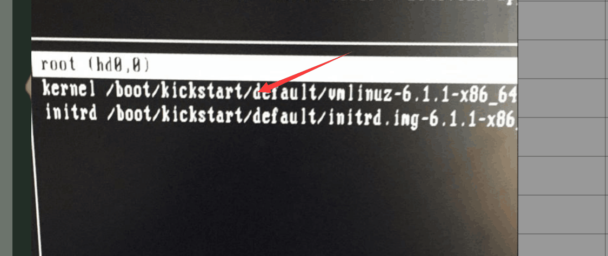
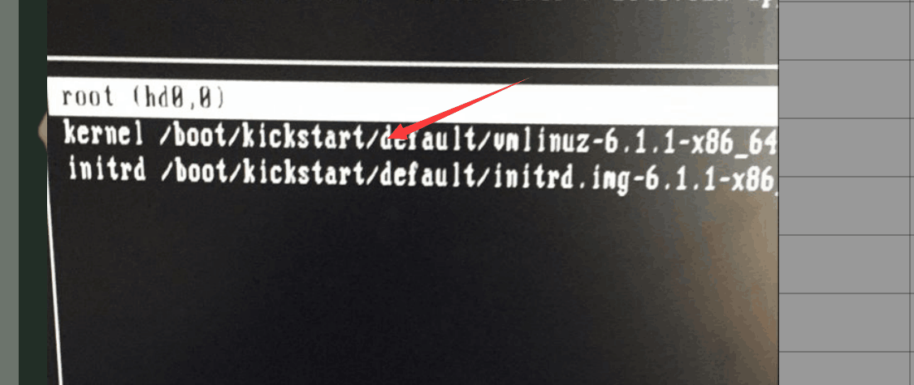

集群管理笔记
常用操作
电源
| 插座 | 1孔 | 2孔 | 3孔 | 4孔 | 5孔 | 6孔 | 7孔 | 8孔 |
|---|---|---|---|---|---|---|---|---|
| 4号 | 1上 | 1下 | 2下 | 4上 | 2上 | 3下 | 3上 | 插座3号 |
| 3号 | 8下 | 8上 | 7下 | 7上 | 大右 | 大左 | ||
| 2号 | 4下 | 显 | 交下 | 5下 | 交上 | 5上 | ||
| 1号 | 插座2号 | 小右 | 6左 | 外下 | 管上 | 6右 | 管下 | 小左 |
清理内存
echo 1 > /proc/sys/vm/drop_caches
登录显示信息
158挂载swap
mount /dev/sdc1 /extra
核心数
/proc/cpuinfo 用来存储cpu硬件信息 一颗cpu可以有多核，加上intel的超线程技术(HT), 可以在逻辑上再分一倍数量的cpu core出来 逻辑CPU数量 = 物理cpu数量 × cpu 核数 x 2(如果支持并开启ht)
| 逻辑CPU | 物理CPU | CPU核数 |
|---|---|---|
| 最大线程数 | 实际服务器插槽上的CPU数目 | CPU核心数 |
-
逻辑CPU数
cat /proc/cpuinfo|grep "processor"|wc -
物理CPU数
cat /proc/cpuinfo|grep "physical\ id"|sort -u|wc -
CPU核数
cat /proc/cpuinfo|grep "cores"|sort -u
硬盘
-
Raid0: 最少需要2块盘，没用冗余数据,不做备份，任何一块磁盘损坏都无法运行。n块磁盘（同类型）的阵列理论上读写速度是单块磁盘的n倍(实际达不到)，风险性也是单一n倍（实际更高），是磁盘阵列中存储性能最好的。适用于安全性不高，要求比较高性能的图形工作站或者个人站。
-
Raid1：至少需要2块*盘，磁盘数量是2的n倍，每一块磁盘要有对应的备份盘，利用率是50%，只要有一对磁盘没有损坏就可以正常使用。n组磁盘（2n块同类型磁盘）的阵列理论上读取速度是单块磁盘的n倍（实际达不到），风险性是单一磁盘的n分之一（实际更低）。换盘后需要长时间的镜像同步，不影响外界访问，但整个系统性能下降。磁盘控制器负载比较大。适用于安全性较高，且能较快恢复数据的场合。
-
Raid10：至少需要4块盘，磁盘数量也是2的n倍。既有数据镜像备份，也能保证较高的读写速度。成本比较大。
-
Raid3：至少需要3块盘（2块盘没有校验的意义）。将数据存放在n+1块盘上，有效空间是n块盘的总和，最后一块存储校验信息。数据被分割存储在n块盘上，任一数据盘出现问题，可由其他数据盘通过校正监测恢复数据（可以带伤工作），换数据盘需要重新恢复完整的校验容错信息。对阵列写入时会重写校验盘的内容，对校验盘的负载较大，读写速度相较于Raid0较慢，适用于读取多而写入少的应用环境，比如数据库和web服务器。使用容错算法和分块的大小决定了Raid3在通常情况下用于大文件且安全性要求较高的应用，比如视频编辑、硬盘播出机、大型数据库等。
-
Raid5：至少需要3块盘，读取速度接近Raid0，但是安全性更高。安全性上接近Raid1，但是磁盘的利用率更高。可以认为是Raid0和Raid1的一个折中方案。只允许有一块盘出错，可以通过另外多块盘来计算出故障盘的数据，故障之后必须尽快更换。比Raid0+1的磁盘利用率高，是目前比较常用的一种方案。
-
配置
- commput0
- [2.10GHz] * 4 * 8核/CPU * 2线程/核 = 64
- 1T * 6块 >>> 3T(raid10), 1.9T+792G未知
- compute1-4
- [2.60GHz] * 4 * 6核/CPU * 2线程/核 = 48
- TeslaK20Xm GPU ，cuda核心数 2688， 内存6G
- compute5
- [2.60GHz] * 4 * 6核/CPU * 2线程/核 = 48
- compute6
- [2.20GHz] * 4 * 6核/CPU * 2线程/核 = 48
- compute7-8
- [2.30GHz] * 4 * 8核/CPU * 2线程/核 = 64
- 数据线(raid5)
- 3T * 3块 >>> 6T
- 4T * 6块 >>> 18T
- 8T * 3块 >>> 15T
- 网线(raid5)
- 4T * 5块 >>> 16T
- 4T * 5块 >>> 16T
- 8T * 5块 >>> 30T
rocks
-
所有节点运行
rocks run host "hostname" -
同步配制
rocks sync config -
要先重启管理节点然后计算机节点,否则导致数据不同步
rocks run host "/etc/init.d/pbs_mom restart" -
添加用户无法qusb要在/etc/group 添加用户
useradd -g group name passwd name rocks sync users #可更改/export/home/name 为 /home/name
-
如果ssh compute 需要输入密码
rm -rf ~/.ssh #然后 退出登录 再登陆 会自动生成新密钥 -
进入单用户模式
在倒计时5秒时，按任意键出现下图， 选择如图，按e进入编辑, 最后加上１,回车,按b,root进入系统
 


-
重装节点
rocks set host pxeboot compute1 action=install
qmgr
qmgr -c "print server" # 输出server的属性
qmgr -c "set server query_other_jobs = true" # qstat可以查看所有用户
qmgr -c "set server auto_node_np = True" # 自动更新节点线程数
multipath与iscsi操作
- 硬件连接及硬盘灯(绿)
-
确定服务开启:
service iscsi restart -
查看iscsi发现记录
iscsiadm -m node -
发现iscsi存储：
iscsiadm -m discovery -t st -p 10.1.1.100:3260 iscsiadm -m discovery -t st -p 10.1.1.101:3260 iscsiadm -m discovery -t st -p 10.1.1.102:3260 iscsiadm -m discovery -t st -p 10.1.1.103:3260
-
multipath操作
multipath -ll #查看 multipath -v2 #自动更新路径 multipath -f mpathg # 删除路径 service multipathd restart #重启确认/dev/mapper下有硬盘连接 # 挂载 mount /dev/mapper/mpathep1 /export/data2 mount /dev/mapper/mpathfp1 /export/data3 mount /dev/mapper/mpathhp1 /export/data4
-
挂载fstab
/dev/sdc1 /export/data0 ext4 defaults 1 1 /dev/sdc2 /export/data1 ext4 defaults 1 1 /dev/sde1 /export/data5 ext4 defaults 1 1 /dev/mapper/mpathhp1 /export/data4 xfs defaults,_netdev 0 0 /dev/mapper/mpathep1 /export/data2 xfs defaults,_netdev 0 0 /dev/mapper/mpathfp1 /export/data3 xfs defaults,_netdev 0 0
-
autofs自动挂载
autofs一般与ldap、nfs协作实现远程home目录。
-
确认/export/*,一般重启服务
service autofs restart -
/etc/auto.master
/share /etc/auto.share --timeout=1200 /home /etc/auto.home --timeout=1200
-
/etc/auto.share
apps -nfsvers=3 -soft,intr,timeo=9999 xmu.local:/export/& #bio -nfsvers=3 -soft,intr,timeo=9999 xmu:/export/& data0 -nfsvers=3 -soft,intr,timeo=9999 xmu.local:/export/& data1 -nfsvers=3 -soft,intr,timeo=9999 xmu.local:/export/& data2 -nfsvers=3 -soft,intr,timeo=9999 xmu.local:/export/& data3 -nfsvers=3 -soft,intr,timeo=9999 xmu.local:/export/& data4 -nfsvers=3 -soft,intr,timeo=9999 xmu.local:/export/& data5 -nfsvers=3 -soft,intr,timeo=9999 xmu.local:/export/&
-
修复分区(未完)
exportfs -rv #重新扫描/etc/exports exportfs -u /export/data2 #umount分区 xfs_check /dev/mapper/mpathep1;echo $? #显示0表示已umount
qsub
1.指定运行节点
qsub -l nodes=1:n3:ppn=40
qusb -l nodes=1:n1:ppn=+1:n2
2.重新运行任务
qrerun
3.lib
for i in `seq 1 8`;
do
sudo scp /etc/profile.d/set.sh compute-0-$i:/etc/profile.d/set.sh
done
rm /usr/lib64/libstdc++.so.6
ln -s /share/apps/gcc-5.3.0/lib64/libstdc++.so.6.0.21 libstdc++.so.6
strings /usr/lib/libstdc++.so.6 | grep
CentOS 6.5 升级内核
rpm --import https://www.elrepo.org/RPM-GPG-KEY-elrepo.org
rpm -Uvh http://www.elrepo.org/elrepo-release-6-8.el6.elrepo.noarch.rpm
yum elrepo源有 ml（mainline 为最新版本的内核）和 lt（长期支持的内核）两种内核，这里我们选择 lt 内核
yum --enablerepo=elrepo-kernel -y install kernel-lt （kernel-ml）
引导文件修改（grub.conf）
将 default 设置为 0 ，default=0
vim /etc/grub.conf